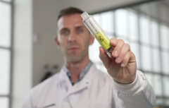

Dragons’ Den investors helped women get rid of pain and depression. How did they manage to do it?
In one of the episodes, a girl came to the investors’ studio and tried to convince businessmen to invest in a remedy for PMS. In her presentation, the girl talked not only about the fact that pain, depressive mood and increased appetite come to 99 out of 100 women during PMS, but she also mentioned that scientists had been trying for years to create a working drug for PMS. A young specialist, she managed to develop a remedy that works. Several investors made up their mind to invest in the project. Dragons’ Den What Happened Next featuring the young scientist will be released shortly. And now we would like to tell you what kind of product it is, how it works and why several multi millionaires became interested in its production.
Stacy James is a young professional with firsthand knowledge of PMS symptoms. While studying at the Medical University, she often took part in scientific conferences. After one of the conferences, she began to actively study natural ingredients that do not disrupt the hormonal background, but relieve the symptoms of premenstrual syndrome. She managed to find out an unusual fact and she is going to tell you about it right now.

— Hello! Thank you for coming to our studio. But why PMS? Could you explain?
— Hello, thanks for the invitation. As a gynecologist and, first of all, a girl, I know that PMS symptoms bother every woman. In some people, this syndrome is less pronounced, but it brings discomfort one way or another. Personally, I was less fortunate and my premenstrual syndrome is very bright. Pain in my stomach, back, chest and head, my entire body hurts. In addition, I experience digestive problems, my face is covered with acne and I become very irritable, and such symptoms haunt most women and it is impossible to get rid of them with medication, diet or sports. We have to go to school, to work, to be mothers and wives. Most women in this situation cannot afford to rest for a few days, which can lead to a nervous breakdown, depression, and the development of gynecological diseases and hormonal disruptions.
— It’s terrible, but why does the body behave like this at this time?
— Before the periods, hormones are rearranged, which is reflected in the body. The stronger the PMS symptoms, the harder the periods. They become painful, unstable, too short or, on the contrary, long.
Many people think that severe PMS symptoms appear due to gynecological disorders, such as polyps or endometriosis, or vitamin deficiencies (iron). But that’s not always the case. In 95% of cases, problems develop precisely due to difficult PMS.
— It turns out that you know firsthand what PMS is and therefore decided to help yourself and other women. So how did you manage to do it?
— I went to medical university because I suffered from premenstrual syndrome all my life. I have tried all kinds of remedies, but none have been effective. While studying, I attended medical conferences and forums. At one of them, I managed to sign up for an internship with a very reputable doctor who, in addition to everything, was engaged in scientific activities. He then told me about the benefits of CBD, which can relieve pain and spasms, increase concentration, reduce inflammation, relax muscles and have a calming effect. It is actively used in medicine, there are even similar remedies for PMS, but all of them are not effective and safe enough. That’s why I decided to make my own. Of course, I spent a lot of money and time before creating the ultimate Illumis formula. Though it was already different from other products, it was not yet ideal.

— Is that why you came to Dragons’ Den?
— Right. In addition, I managed to win their favor and in the end I received a decent amount of money for research and development. I am very grateful to have been chosen. This money helped me continue my research, hire specialists, refine the formula, conduct tests, and launch production.
— Could you tell us more about the formula of the drug? How does it work? Can it bring the same effect as THC, for example?
— I’m going to tell you about the main ingredients, but I will say right away that this is a natural and safe product that is fundamentally different from THC and does not give the same effect.
The two main ingredients are CBD and CBG.
CBD is a cannabidiol that does not have an intoxicating compound and is synthesized from Cannabis sativa. It is known for its powerful healing and therapeutic properties. CBD acts on the muscles to relax them, relieve spasms, and reduce pain and inflammation. At the same time, it increases concentration. You do not feel very relaxed, but rather collected and calm at the same time. That is, this plant does not increase the heart rate, does not disturb the heart rhythm and does not allow the nervous system to be excited.
Cannabigerol, or CBG, is also found in the Cannabis sativa plant. It was discovered later than CBD. This is due to the fact that its content in the plant is not that high and its extraction is a much more difficult and expensive procedure. I should admit that most of the investments went to CBG. This is what sets Illumis apart from similar products. My formulation contains high levels of pure CBG. This particular ingredient has special healing properties. It is not only an antibacterial and antifungal agent, but also an excellent pain reliever, anti-inflammatory, and most importantly, a potential cancer inhibitor. It has many properties that no other product in the world can boast of. At the same time, CBG does not have an intoxicating effect on the body or brain. In addition, CBG helps to increase bone strength and relieve insomnia, which is very important for women over 30, when the first problems appear, which can very quickly lead to serious consequences.

— So your formula is completely safe? What else does it include?
— Yes, Illumis is completely safe. This has been confirmed by tests carried out in independent laboratories. The product received certificates of analysis (COA). Medicinal properties of the drug have also been laboratory confirmed. The formula would not be as effective without additional natural ingredients, such as Vitex, which has been used for centuries to help with infertility problems and reduce PMS symptoms (headaches and irregular bleeding).
Did you know that, for various reasons, the ratio of neurotransmitters in women changes, which affects the psycho-emotional state, mood, reproductive system and sexual behavior? It has been proven that 9 out of 10 women have health problems due to this particular reason. Modern medicines are aimed at solving one specific problem, while not eliminating the real source of the disease. Illumis is designed for a comprehensive recovery of the female body. Its regular intake stabilizes the emotional state, eliminates problems in the intimate and reproductive areas.

— Amazing. You have done a great job creating this solution. But I don’t fully understand how it works.
— Look, all people have an endocannabinoid system (ECS). This system is made up of cannabinoid receptors (CB₁ and CB₂) that interact with cannabinoids such as CBD and CBG. You will be surprised, but both of these receptors (CB₁ and CB₂) are expressed in the uterus, other vital organs, the nervous system, and bones. This is why CBD and CBG help with many issues related to seizures, hormonal imbalances, mood, stress/anxiety, inflammation, and more. At the same time, they make each other stronger, because CBD is more effective for the physical condition of the body, while CBG helps with stress, psycho-emotional disorders, depression and neurological disharmony. Additional natural ingredients also normalize the balance of female hormones in the body, regulate periods, relieve pain, and period cramps.
In addition, Illumis:
- Blocks inflammatory mediators;
- Increases the activity of the brain mediator GABA, which inhibits pain;
- Stimulates the production of serotonin — the ‘happy hormone’;
- Reduces pain impulses;
- Neutralizes pain signals sent to the brain;
- Reduces smooth muscle pulsation during spasms;
- Relieves nausea and vomiting, which often accompany severe pain;
- Softens the course of chronic pain due to arthritis, radiculitis, gastritis, migraine and other diseases;
- Prevents exacerbations of chronic diseases and their complications (including tumor formation).

— No wonder your presentation won the hearts of investors and they helped you create this solution. But could you tell me where people can buy it?
— Unfortunately, at the moment, Illumis is an exclusive product, so it is not yet sold in pharmacies. The first batch sold out within just a couple of days. The second batch is currently ready and it can be purchased on the official website, which we have created specifically for customer convenience. You don’t need a prescription from your doctor, as the product has no banned substances and is completely natural.
— It’s definitely a pleasure! Thank you for the interview, for your work and for trying to change the world for the better.
— I have always stood for innovation and I am glad that I can move in the right direction. Hopefully, Illumis will help every woman, therefore I am giving a 50% discount to whoever orders the product from the second batch.


Related Topics
Top Stories
-
 Medicinal cannabis helps cancer pain
4 days ago • 1089 comments
Medicinal cannabis helps cancer pain
4 days ago • 1089 comments
-  Vaping: high lead and nickel found in illegal vapes 2 days ago • 394 comments
- Magic CBG 6 days ago • 553 commentsents
- The Dutch solution to stress 5 hours ago • 77 comments
- Medical effects of cannabis components yesterday • 261 comments
Comments
Join the conversation
Mary Thompson
10:20
Thanks, I’m gonna order it for myself.
Megan Wild
10:22
I personally don't have any issues of this kind. Dunno, when they talk about pain and a bad mood, it seems to me that they are exaggerating.
Margo Kovalev
10:29
You know, everyone's body is different. My pain was so terrible that I could hardly get out of bed for three days, and 10 days before my periods I simply turned into a ball of nerves, I was irritated by EVERYTHING. Fortunately, I found out about Illumis, otherwise I don’t know how much longer I would have suffered. This is the only product that whipped me into shape, both internally and externally.
Roxy Hunt
11:02
I also suffered from PMS symptoms, I was twitchy and angry. None of the sedatives helped, nor did the painkillers. As soon as I tried Illumis, I went from being an evil witch to being a fairy.
Helen Jones
11:27
I’ve been experiencing torture every month since the age of 12... and my periods last 7 days. And 10 days BEFORE I feel I’m not myself anymore… I checked with gynecologists, there are no deviations, they say… my body just works like that! It’s just terrible. I'm going to try this, hope it helps…
Heather Beri
09:59
I can relate! Periods are the worst thing that ever happened in my life! But with Illumis, I forgot about this nightmare! And most importantly, I am delighted with the composition! A very effective remedy, all-natural and does not harm the internal organs and the nervous system.
with 50% discount